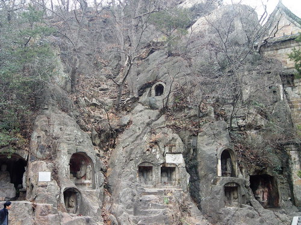
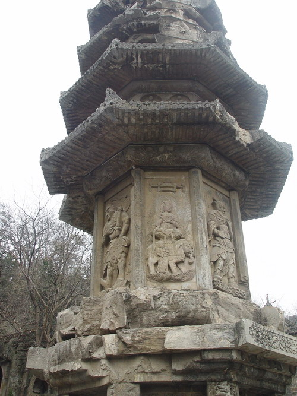
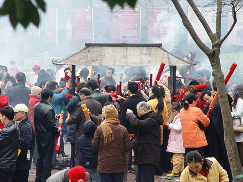
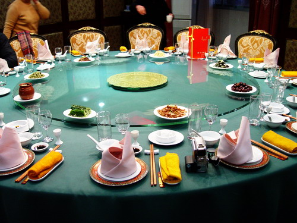

Archives : 2005-02
红方...黑方... @ Feb 27, 2005
红方黑方，红方黑方......睁开眼已是上午9点多钟。
挥霍完......兴奋也就消失了，这样能使我安静。
为了两个人能在一起，看他打网球陪他加班，然后他陪我去练倒桩。渐渐开始珍惜和他在一起的时间，为什么以前我却总是被表面的华丽所吸引？想想除了女人的虚荣之外还有对酸不溜湫的所谓的浪漫和情调的追求，这些足以毁掉一切真实真相！
元宵节的夜 @ Feb 25, 2005
喜气洋洋的大红灯笼

元宵节晚餐选在这家我们喜欢的餐厅，当天晚上这里的客人特别多。最喜欢的菜有泰国招牌煲仔翅、泰国咖喱肉蟹、虾饼和木瓜汁。


巡逻的警车

Into The Light @ Feb 18, 2005

Into The Light
by Albert Darmali
自从我的Sony笔记本更换了保修期内的硬盘之后，一上网就死机。而他的IBM笔记本却一直没有出现过问题，所以适当的考虑品牌很有必要。晚上收拾出5、6年前买的一件黑色羊毛短大衣，人民币499元，放到现在应该更贵些，人民币越来越不值钱了。
洗澡前从书架的库存里找出7本《旅行家》，6本介绍日本1本介绍巴厘岛。把这些书端放在床头柜上，只等洗澡结束直接奔进被窝阅读直至进入睡眠。可洗澡之后还是忍不住来到书房打开最明亮的橘色灯光打开电脑写点什么。在jianshou的网站里有个人写了段有趣的文字，大致意思是：jianshou要求其每月至少写15篇文章，其认为这是要求不得的，文思泉涌时可以一连写好几篇，有时却干涸得一个字没有，其比喻成每月的大姨妈要想多来几次也来不了，现在我就是这种状况哦。喜欢jianshou中文blog屋顶上的木帷幕标题下的那句“让你看到我心中细腻的那面”以及他太太blog上的“梦里的天空很大，我躺在你睫毛下； 梦里的天空很美，我躺在你睫毛下。 爱对了人，每天都过情人节。”爱对人，爱对人，爱对人，爱对人......相象的人会相互吸引，岁月在激情中真的燃烧起来，一定要节约能源小心安全，不然烧焦的是自己。若在一次爱情中释放了所有能源，下面的人生也将波澜不惊......相如以沫，不如相忘于江湖。
上班心思 @ Feb 18, 2005
上班两日一直都在忙碌，这边事情刚做完回到座位上，桌上又有一些文件需要处理。以前时忙时闲的时候想着要是自己能忙碌些会更充实，现在忙起来又想是不是在忙有意义的事儿？我问他你最喜欢南京哪些地方？他说第一喜欢的地方是办公室，其次是网球场、日本料理店、酒吧、驾驶的车子里。只有一个找到工作状态和乐趣的人才会把工作场所作为第一喜欢的地方，这让我既羡慕又妒忌。在这个城市中除了家，还有一些令我喜欢的地方和场所，但是和他喜欢的办公室相比一切都没有意义。
昨儿一整天没有妈妈的消息，忙着忙着也就忘记给她打电话。晚上和朋友吃饭谈话到11点钟左右才回家，睡了5个小时左右爬起来又急忙赶去上班。大概只有周末才能令人悠闲一些，是吗？今天才知道原来妈妈和我的姐姐从前天中午12点开始看《天国的阶梯》一直到昨天早晨六点才睡觉（18个小时），电话里感叹仍没从剧情中回过神来。如果可以沉浸在自己喜欢的事物中也是很享受的，无论是悲伤还是喜悦。
现在我有两个Blog站：Te Cinese和Chinese Tea。因为在Te Cinese上写得多了，Chinese Tea就越来越冷清了。还好我只建立了两个Blog，有两个email地址。我知道有些人有一大把email信箱，后来自己都忘记了信箱地址和密码，有时发信给对方，还要问问究竟哪个信箱是常用的。想关闭Chinese Tea，从2002年4月建立到现在已经如我的心情一样平淡到毫无欲望，没有欲望更新就是衰老，衰老之后便是死亡。可有人认为：“建立一个“品牌”不容易即使这品牌未必精彩了还是保留的好，好似同时爱两个人，总是一个人得到的多了另一个人就会少一些。”
昨天在hi5上收到一个信息，对方自称是英国专业律师，一个在尼日利亚出车祸死亡的中国家庭留下150万美圆的遗产，律师提出让与同姓的我签发一些文件提供一些个人信息，就可获得遗产的30%......这个骗局可笑得有点象愚人节的节目。欺骗的目的各不相同，有的基于良心，有的基于感情，有的基于物质钱财，也有的基于游戏！受骗大致因为两点：天真和贪婪。出于娱乐我回复对方说那30%留给你自己享用吧，骗子居然今天又写来长篇大论打算说服我。看来一个真正的骗子对自己设下的骗局如宗教信仰般沉浸其中，不仅自己相信还要别人也相信这是真的，当鱼儿吞下鱼钩时骗子就开始有享受的感觉了。当你看穿面具背后的嘴脸，看着一个认真的骗子尽情地表演，一切又是那么滑稽可笑。
10 Places of My City @ Feb 16, 2005
你能在自己生活的城市里找到10个属于自己的地方吗？它们并不一定是名胜古迹，或许是一个餐厅，一个酒吧，一个咖啡馆，一个公园，又或者是一条林阴小道。是那些让自己感觉最舒服的地方，是三两好友谈天说地的地方，是心烦意乱之时独自停留的地方。—Owen

发现这个纪录自己城市中最喜爱的10个地方“10placesofmycity”的活动，由Owen发起，很不错的创意！正如呆若木鸡认为的那样，这是个发挥blogger积极性的好点子。
不知道有多少南京人在关注中国茶，最近疏于管理和更新，中国茶也逐渐冷清了。事实上南京是我母亲的故乡，她出生在如意里，故小名为“小如意”。而我并不出生在南京，在这里生活的十几年间也并没有培养出什么根深蒂固的故乡情感，只是因为这里有我的家人，所以才值得我牵挂和惦念。不同的人对于一个城市的体会和感受是完全不同的。无论如何总还有些地方令人喜爱吧，且听下回分解。
让我们来看看两位Blogger对于我们南京最喜爱的有哪10个地方？
xpoint：韦陀巷的老屋......
Moneywood：琅玡路小学附近的所有小街......
过去，现在。 @ Feb 14, 2005
第一次在这座石像前拍照时，对这个没有唇鼻没有手掌的神灵无丝毫感觉。相隔11年后的今天站在它面前，心里酸酸涩涩的。在这个寺院里可以看见很多龌龊而愚蠢的面孔，香炉烛台俨然不够香客们使用了，有些香客居然把香烛插在大树根下，火苗燃着了树干却无人管理。石像们即使掉了脑袋断了手臂仍然被香客们当作神仙来拜，香火直接靠在石像上熏得黑乎乎一片。即使在神灵眼皮底下也是这么没秩序。从过去到现在，我们都在丢脸，如石像们的命运一样那么自然。
残酷的历史记录


丢掉头颅的历史仍然历历在目，而现在的人们也没有好好去管理和爱护它们

即使高高在上也逃脱不了噩运，那些残缺的亭角边檐呈现着嘲讽的造型

迎财神 @ Feb 14, 2005
中国民众的过年时有一项接财神的习俗。一般在正月初二清晨或者在初五清晨燃放鞭炮，以示迎接财神。
江南地方，又有年初五接路头神的习俗，他们也被称为财神，其来源则不易考证清楚，大抵是民间信仰，难以查究。不过初五接路头的习俗於敬财神的方式、 时间却大有影响。一般商店除夕做完生意便放年假，至初五接过财神，才开门营业，称为开头盘。这样，接财神的时间便有正月初二和初五两个时间，至於某 地固定在哪一次，则各地各行其俗。
大年初五凌晨1点前往百家湖放烟花爆竹迎财神
初五早晨栖霞古寺迎财神



04年8月与05年正月的对比

家庭聚会何其多 @ Feb 14, 2005
表姐和她四个月的点点。
表姐32岁生的点点，顺产。身体恢复的不错！




春天在漫天大雪中来临 @ Feb 14, 2005


?! @ Feb 06, 2005
晚上小公司在金陵湖滨酒店开年终总结会，我们居住的房间卫生间装修的很不错，餐后的烟花也不错，遗憾的是我没带相机。这种时刻似乎每个人一年中的怨气都可以消一消了，好似体育比赛的中场休息，休息到新年上班又要开始拼命努力工作，小心翼翼地与人相处。整个一天都在忙碌，事情一件接着一件，这种状况越多估计那些敏感的神经也就会越来越粗糙。敢情工作和活着一样不能多想。
看看我们周围的人，大多朝九晚九的工作，忙忙碌碌一天回家吃饭洗澡睡觉，然后第二天重复同样的生活秩序。大多数人生活枯燥，若某时某刻有一个小小的火花闪烁一下的话，也能被燃放出漫天灿烂的烟花。
**同事战友聚会，一战友惊讶地问我的同事：“听说你不是已经死了吗？追悼会都开过了？”事实上我的同事不过因为眼角膜不好进医院做了一次手术罢了。
**某日听一同事说到：“XX被这座大厦里的一个千万富翁追求，她都没答应啊。”在这个金钱物质至上的时代里，唯有向其表达自己的崇敬之意，谁知其回答说：“要有这等好事，我早答应了。”
……诸如此类被传播的神乎其神的故事还有很多，之所以最后被传播的面目全非，无非是因为人们复杂的内心，好些故事传到自己这里都让当事人瞠目结舌，此幽默非幽默也。这漫天的烟花只要不刺伤眼睛不炸聋耳朵不烫坏衣物却也无关紧要，就怕反之则不然。想起马季的一个群体相声，最终“马季真的生了一个蛋。”在中国做人，苦的不是身体,苦得是心。